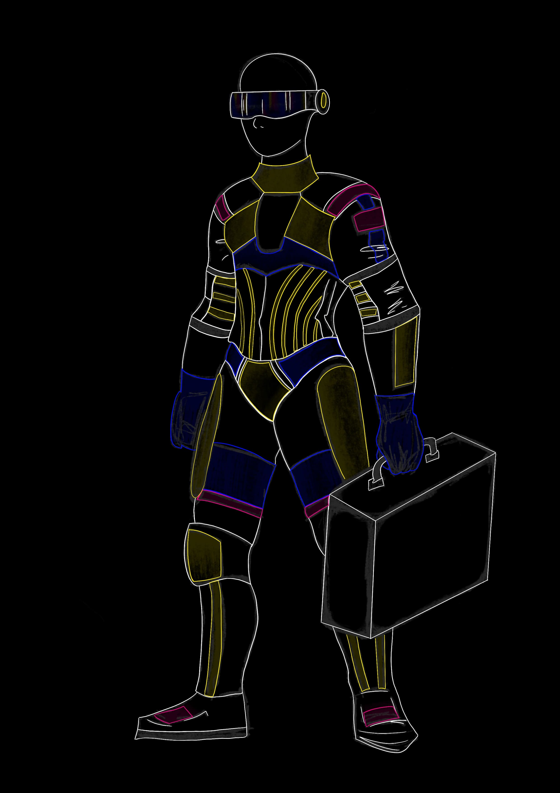
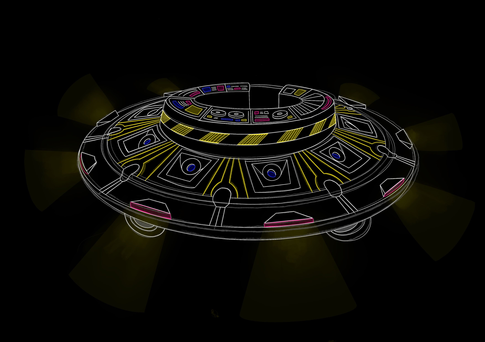

2_compressed.pdf)
THE SPACESHIP
The Spaceship è l’evento di rilancio del brand Hacienda che risponde a un malessere dei giovani legato alle aspettative riguardo al successo lavorativo e personale: molti si sentono costretti a inseguire obiettivi sempre più alti. Proprio per questo The Haçienda vuole creare un momento per sfogarsi dallo stress e uscire dalla routine quotidiana, mostrando al pubblico come vivere in modo più libero ogni giorno. Tramite i suoi eventi vuole urlare il suo messaggio alla città e cambiare le persone che partecipano.
The Spaçeship è una navicella che viene da un altro pianeta per mostrare alle persone un nuovo modo di vivere. La navicella atterra in città, attraversandola tutta e trascinando le persone in una danza liberatoria e impetuosa, rivelando una nuova dimensione, uno spazio dove sono completamente libere dalle pressioni. La navicella poi decolla, alla ricerca di un’altra città da cambiare, lasciando un messaggio duraturo.



_compressed.pdf)
 2_compressed.pdf)